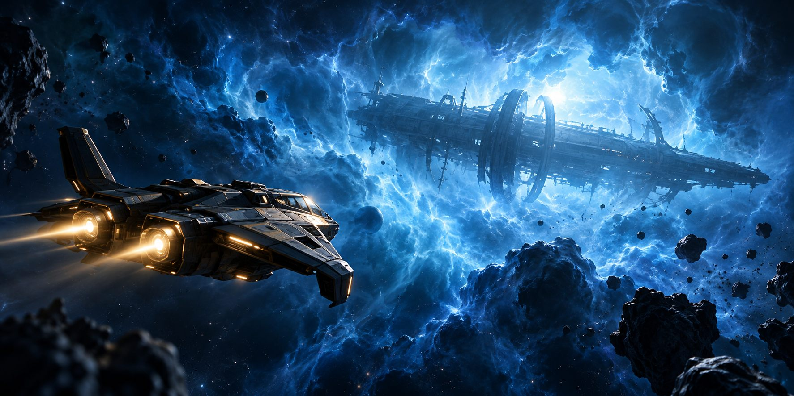
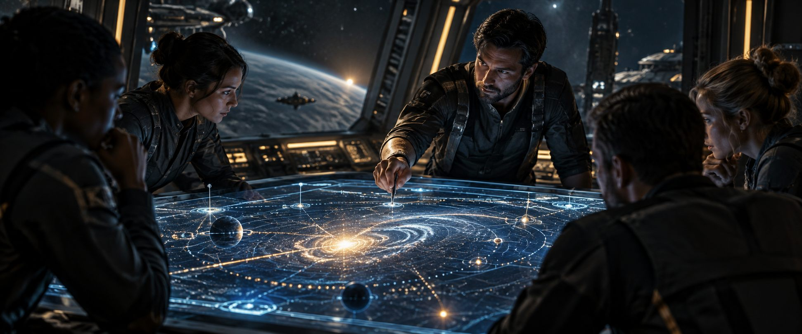
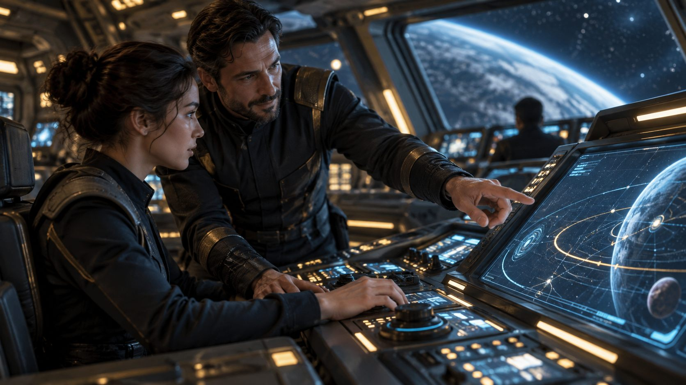
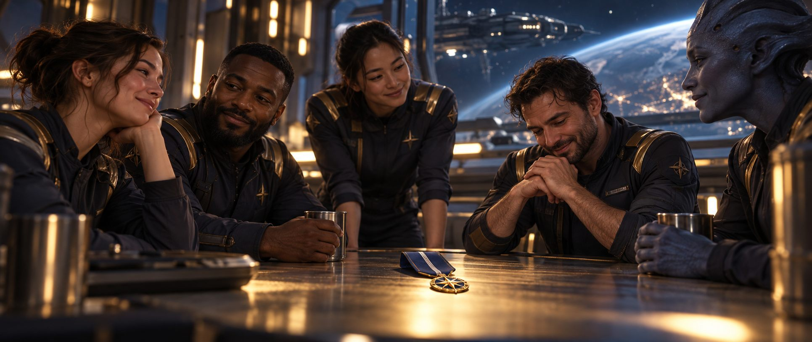
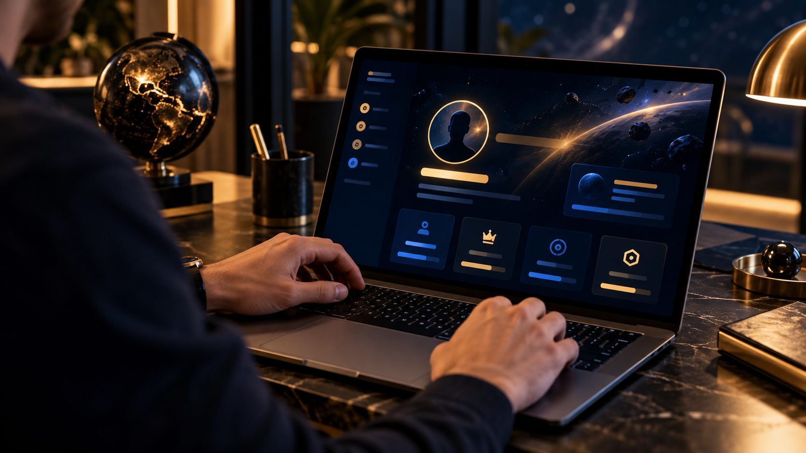
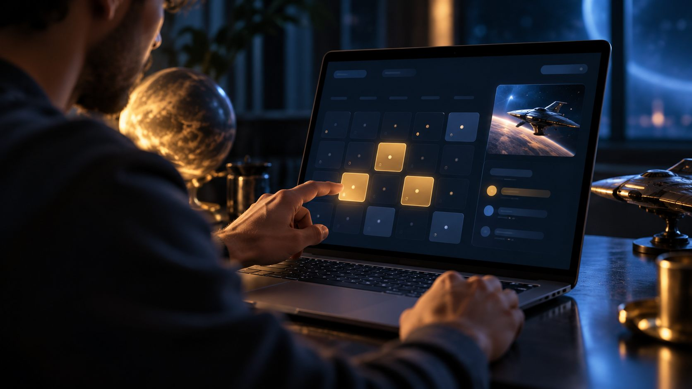

01 / LIVE CHARACTERS
Meet the unexpected
Receive calls and messages from characters performed live. Ask questions, weigh what they tell you and decide how to respond.

Take your place aboard a starship in an interactive mission shaped by your crew. Speak with characters performed live through text and voice, unravel mysteries and solve problems together as the story unfolds.
No EmptyEpsilon or roleplay experience needed. We train you before the mission begins.
Join a crew of usually 4–6 players, each online from their own device. In EmptyEpsilon, the starship game software, you operate one station while your team talks over Discord and makes decisions together.
UFN means United Federated Navy, the setting for our missions. SXP (Shared XP) is the Discord community where you find games and meet your team.
Receive calls and messages from characters performed live. Ask questions, weigh what they tell you and decide how to respond.

Investigate strange events, protect other ships, navigate tense encounters or work out what is really happening. Your crew brings different skills to the same problem.

There may be danger and combat, but listening, communicating and choosing your next move are just as much a part of the adventure.

You operate one part of the ship, talk with your crewmates and decide together what to do next. Here is an illustrative moment:
You only need to learn your own station, and we train you before play begins.
Mission characters are performed live. They can message your ship or speak with your crew, responding to the questions you ask and the decisions you make.
A character may hail your ship in EmptyEpsilon. Read the message together, ask questions and decide how to reply.

Some characters speak with your crew in real time. Listen, ask them questions and respond in your own words.

Your Flight Controller runs the session and helps your crew follow the action. You and your crewmates use the same Discord voice channel to talk throughout the mission.
Set aside around 1½–2 hours. Your Flight Controller runs the session and guides your crew through getting started.

01Meet the team and find out what your mission is about.

02Learn your controls, try things out and ask questions before the mission starts.
Work with your crew as new information, characters and challenges enter the story.

04Talk through the experience together. Medals or promotions may also be awarded.
You can book a place on your own. If you already have a group, you can arrange your own slots directly with Smarty, SXP Director and Lead Flight Controller for UFN games.

02Book your first game and start a record of your time with UFN.
Open Terminal
03Tell us your first and second station choices, or select no preference. Terminal tries to place you accordingly; crews can discuss and change stations right up to mission start.
UFN Terminal is our mission booking system. It is also where you can follow your journey as a player: see the sessions you have played, read your mission reports and keep track of the stations you have taken.
Your record also shows the medals and promotions you earn along the way.
Explore UFN Terminal
Terminal holds your mission details. Join a little early. The DEPLOYMENT voice channel usually appears in SXP Discord at your game’s start time; join it and your Flight Controller will talk you through the rest.
Keep an eye on #ufn-deployments in SXP Discord for upcoming missions, or ask there about joining a future crew. If you already have a group, you can arrange slots directly with Smarty.
Bring a reliable internet connection, a Discord account and a working microphone for crew voice chat. Headphones or a headset are recommended.
Download EmptyEpsilon from the official website or Steam. Check that you have EE-2024.12.08.
Download the matching EE-2024.12.08 APK from the EmptyEpsilon website.
Use browser access from the top of your Terminal page once the game is live. You can also use BlueStacks with the matching Android APK, or run Windows through Parallels or similar software.
Browser play works in Chrome, Edge, Firefox and Safari. The access link appears at the top of your Terminal page once the game is live. Ask your Flight Controller for help when you join the voice channel.
These are the practical bits to have ready. Your Flight Controller will guide you through the game itself.
You don’t need to study before joining. If you’re curious, our station guides show what each role does, with screenshots of the UFN game interface you’ll actually use.

No. Every session includes station training before the mission.
Not at all. Some players roleplay; others keep things straightforward. Both are welcome when everyone respects the other players. Private groups often roleplay more.
Yes. Pick an open slot in Terminal and join a crew, usually 4–6 players. You can also put together a group and arrange slots directly with Smarty.
We have standalone missions and a connected six-story campaign, usually played by private groups. Both can be requested.
Joining SXP, using Terminal and playing UFN Missions are currently free.
Cancel directly in Terminal or let us know in #ufn-deployments. Please give as much notice as you can.
Questions or technical trouble? Ask in SXP Discord. We’re here to help you get playing.
Come as you are. We’ll help with the rest.